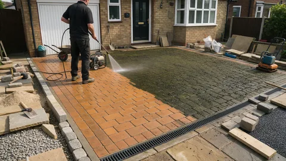

Generated photo
Generated photoGenerated for this demo. Not a photograph of a real job.
Why rainwater is the whole argument
A front garden soaks up the rain that lands on it. Pave it over with something solid and that water has to go somewhere else, now, all at once. Do that to one house and it barely matters. Do it to a whole street and the water ends up in the road, in the drains that were never sized for it, and in somebody's living room three streets down.
That is the thinking behind the rules on front gardens, and it is why the question "what am I allowed to lay" turns out to be the same question as "where is the water going".
The general position in England
Put simply, and this is general information rather than advice on your house: laying a new hard surface in the front garden of a house is normally allowed without planning permission if either the surface lets water through, or the water that runs off it goes to a border, a lawn or a soakaway inside your own boundary. Lay something solid that sheets water out on to the road instead, and once you are over a few square metres you are normally into needing planning permission.
There are the usual complications. Flats and maisonettes are different from houses. Listed buildings and conservation areas have their own rules. Some houses have conditions attached from when the estate was built, or an article four direction covering the street, which can remove the normal permissions entirely. Wales, Scotland and Northern Ireland have their own systems.
None of that is a paving firm's decision, and anybody who tells you confidently that you definitely do or do not need permission without knowing your street is guessing. Your council's planning pages will say, and their planning team will answer the question. Ask before you order materials, not after.
Where the water can actually go
What this looks like on a real drive
In practice, keeping the water inside your boundary is not a dramatic or expensive thing. It is a fall built into the surface going the right way, a gravel border or a bed left along one edge, and a soakaway where there is nowhere obvious for it to soak. The expensive version is the one where nobody thought about it and the water has to be chased afterwards.
Two things worth saying plainly. Permeable paving still needs somewhere for the water to go once it is through, usually a stone layer built to hold it, so permeable blocks on an ordinary base are not the answer on their own. And connecting a drive to a drain or a sewer is not something a paving firm decides: the drain belongs to somebody, and permission comes from them, your council or the water company.
What we would not claim
You will not find this demo site claiming a drive is compliant with any scheme or standard, because that is not a claim a website should be making. What a real firm should do is tell you where your water will go, put it in the quote in words you can read, and point you at the council for anything that is theirs to decide. If a quote says nothing at all about drainage, that is worth a phone call before you sign it.
Written for this demo from general trade knowledge. It is not advice on your property, and planning and dropped kerb questions are for your council rather than for us.
More advice
While you are here.
 Generated photo
Generated photoBlock paving, tarmac or resin compared
Three surfaces, three sets of trade offs, and one question underneath all of them that nobody asks until the quotes land.

Generated photoLooking after a new driveway
What to do in the first year, what to leave alone, and the three jobs that keep a drive looking like it did on the last day.
Want somebody to look at the actual drive?
Tell us what is there now and your postcode. Ten minutes with a level beats any article.